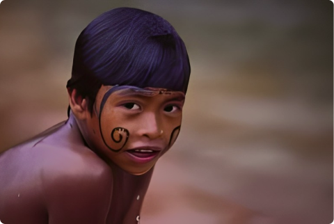

Nomeação
De acordo com Novaes, "No ritual de nominação a criança é formalmente introduzida na sociedade Bororp de seu iedaga e das mulheres do clã de seu pai, que a ornamentam para o ritual.
Pelo nome, a criança passa a estar associada a uma categoria social - a linhagem de um clã - vinculada a um herói cultural da sociedade bororo, que, em tempos míticos, estabeleceu os fundamentos da vida social, a qual deve ser continuada por homens concretos.